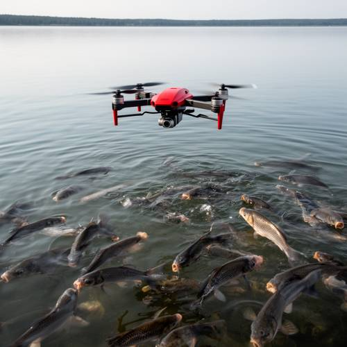
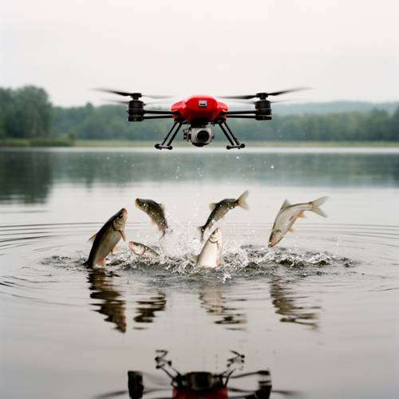
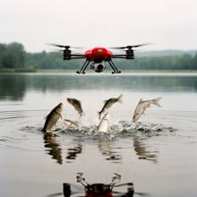

Style — A red drone flew low across the calm lake at low altitude, and the fri
A red drone flew low across the calm lake at low altitude, and the frightened fish of fish in the water swam in all directions. There were no ships in the picture. It was a documentary photography style.

Direct — one call, no iteration

Continuum — Qwen3.8-27B + FLUX.2-dev
Judge — Direct
PASSStyle — The image is a realistic photograph of a red drone hovering over a body of water filled with fish. The style is clear and realistic, consistent with documentary photography.
PASSGrammar - Negation — The image depicts a large body of water, a lake, with a distant tree line. There are no ships, boats, or any other watercraft visible in the picture.
FAILAction - Animal — The image shows a large school of fish in the water. The fish are clustered together in a dense group near the surface, many with their mouths open. They are not depicted as swimming in all directions as if scattered.
FAILAction - Non-contact Interaction — A red drone is flying low over a school of fish. The fish do not appear to be frightened; they are gathered in a dense school directly below the drone, which does not visually convey an interaction of the drone frightening the fish.
Judge — Continuum
PASSStyle — The image is rendered in a realistic, high-fidelity style that resembles a photograph. The lighting appears natural, and the composition captures a specific moment in time, consistent with a documentary photography aesthetic.
PASSGrammar - Negation — The image depicts a body of water with a shoreline in the background. There are no ships, boats, or other watercraft visible anywhere in the picture.
PASSAction - Animal — Several fish are depicted jumping out of the water and creating splashes. The fish are oriented in various directions, with some leaping towards the left, some towards the right, and others more vertically, which conveys the sense of them moving in all directions.
PASSAction - Non-contact Interaction — A red drone is hovering at a low altitude directly above a group of fish. The fish are shown in a state of agitation, jumping out of the water and creating significant splashing. This action by the fish directly below the drone visually represents a reaction of being frightened by the object above them.
What the agent did
Thinking
The user is requesting the following kind of image: a red drone flying low over a calm lake, startled fish swimming in all directions, no boats, documentary photo style. Let me analyze the prompt: "a red drone flies low over a calm lake at low altitude, and the startled fish swimming in the water flee in all directions. There are no boats in the frame. Documentary photo style." So, the image needs the following: 1. A red drone flying at low altitude over a calm lake 2. Fish visible in the water (leaping/swimming in all directions) — fish jumping and fleeing from a low-flying drone 3. No boats 4. Documentary photo style Let me generate the image using flux2-dev. Prompt: "Documentary photography, a red quadcopter drone flying at very low altitude just above the surface of a calm lake, startled fish leaping and splashing in all directions across the water, ripples spreading out, no boats, no other vessels, natural light, photorealistic, 35mm film photography style, candid wildlife documentary shot." Let me generate this.
Step 1 — `generate_image`
{
"model": "flux2-dev",
"prompt": "Documentary wildlife photography, photorealistic 35mm still: a red quadcopter drone hovering at very low altitude, skimming just above the surface of a calm lake, its rotor arms and red body clearly visible. Beneath the drone, startled fish leap and splash in all directions, silhouettes and silver bodies flying out of the water, droplets and ripples spreading across the still mirror-like lake. No ships, no boats, no vessels, no people. Soft overcast daylight, natural colors, shallow depth of field, candid reportage style, high detail, realistic textures."
}
Result img_0

Thinking
The result is pretty good. Let me evaluate it against the prompt: 1. ✅ Red drone — yes, there's a red drone flying low over the lake 2. ✅ Low altitude — yes, flying close to the water 3. ✅ Calm lake — mostly calm, with ripples where the fish are splashing 4. ✅ Startled fish swimming in all directions — the fish are jumping out in different directions with splashes. "Swimming in all directions" is satisfied as the fish leaping and splashing in various directions. 5. ✅ No boats — I don't see any boats 6. ✅ Documentary photo style — photorealistic, natural light, looks documentary-style A few small points: - The fish are leaping out of the water, which captures "startled fish swimming in all directions" reasonably well. In reality, the prompt says "fish in the water are swimming in all directions," but the interpretation of them leaping and splashing in all directions is a good visual expression of the startled state. - The drone is a bit large in the frame, but that's not a problem. - The water surface is calm, with the drone's reflection visible in the foreground. I don't see any major issues. Let me zoom in to check details like whether the drone looks correct and whether the fish look right. I'll inspect a few regions to check the quality — the drone and the fish.
Step 2 — `inspect_region`
{
"image": "img_0",
"roi": "the red drone",
"padding": 0.1
}
The drone looks fine — a red quadcopter with a camera. The second inspection failed with a text roi. Let me use a rectangle to inspect the fish area. Actually, I already looked at the fish in the whole image and they seem fine — multiple fish are jumping in different directions, with splashes. The drone has a small white logo-like patch, which is fine. The image seems to meet all the requirements: 1. Red drone ✅ 2. Low altitude over a calm lake ✅ 3. Startled fish in all directions ✅ (jumping and splashing in all directions) 4. No boat ✅ 5. Documentary photography style ✅ The image is in good shape. I'll mark this as the best and finish up.
Model
The image meets all requirements: a red quadcopter skimming low over a calm lake, startled fish leaping and splashing in all directions beneath it, no ships anywhere, and a natural documentary photography feel.
Step 4 — `mark_best`
{
"image": "img_0",
"reason": "All prompt elements present: red drone at low altitude over a calm lake, startled fish splashing in all directions, no ships, documentary photo style."
}
Thinking
The image has been marked as the best. The drone is correctly verified as a red quadcopter. The fish look good in the overall image — they're leaping in different directions and splashing. No boats to be seen. Documentary style achieved. I'm confident in this result. Done.
Model
The image is complete and marked as the best result. It shows a red quadcopter drone flying at very low altitude over a calm, mirror-like lake, with a school of startled fish leaping and splashing in all directions beneath it, ripples spreading across the still water, no ships in the frame, and a natural, photorealistic documentary photography look with soft overcast light.